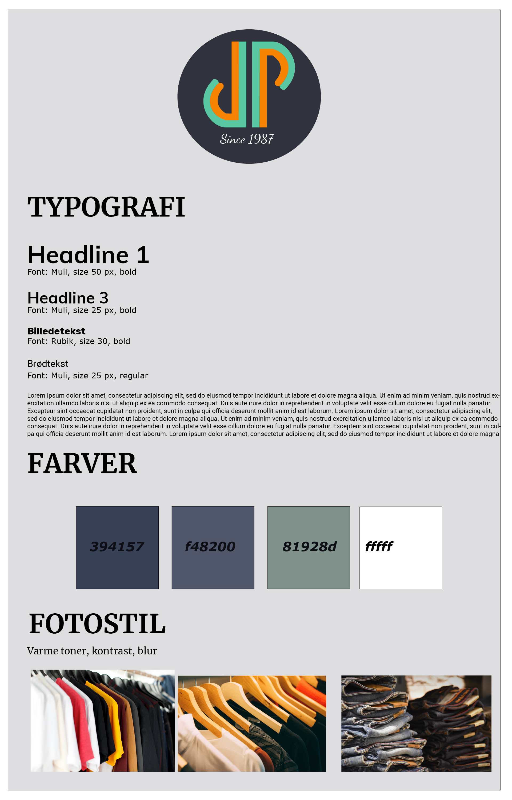

Inom detta tema har jag andvänt mig principerna inom video och bild gällande komposition, intervjuteknik och introducerats till Adobe premier pro.
Grundstommen
Ett gruppkontrakt skapades och gav oss förutsättningarna för att kunna sätta upp ramar kring vårt kommande samarbete som skulle omfattas av redesign av befintlig hemsida, videointervju samt tillhörande dokumentation för hela projektet genom ett dokumentationssite som gär det mer lätt överskådeligt för oss som arbetde med projektet gällande , men även om Jørnas själv hade velat följa vilken typ av hemsida de kunde förvänta sig av oss gällande färgval, typsnitt och fotostil.

Test i förarbetet
Projektet startade med ett BERT och 5s-test som gav oss en kvantitativ analys och bättre överblick hur den befintliga hemsidan i dagsläget uppfattas och i vilken riktning vi kunde ta vår uppgift.
För att kunna visualisera hur den kommande hemsidan ska se ut startade vi därefter med att göra en wireframe i vår designprocess för att skapa en överblick över funktionaliteter och sidan struktur.
Oförutsägbar problematik och åtgärder
Före inspelningen så gjorde vi ett storyboard med framings och scener.
Dock hade vi stora problem med att följa de framing och kompositionsprinciper vi lärt oss och följa storyboard då vår intervjuperson var extremt besvärad av vår närvaro och intervju redan från första ankomst. Situationen var stressande, rotet och motbjudande för oss i gruppen, vilket försvårade arbetet och resulterade i inte särskilt goda resultat. Jag ansvarade över vår storyboard och att alla shots vi ville ha blev filmade, vilket var svårt att uppnå med tanke på omständigheterna.
Med detta som råmaterial blev klippningen en mer besvärande process än planerat. Rena konkreta ting som vi inte lyckades med i detta projekt var belysningen. Det fanns ingen möjlighet till naturligt ljus. Vi jobbade i motljus och med flackande ljusrör i taket.
Hade jag idag fått göra om uppgiften med en annan intervjuperson hade jag arbetat ännu mer med kompositionsprinciperna inom bild och video; gyllende snitt för att skapa harmoni för tittaren, filma i jämnhöjd och filmat i ett naturligt ljus och inte i motljus. Hade ljusförutsättningen fortfarande varit den samma hade jag sänkt min bildfrekvens till 25fps för att inte få flimmer med i videon.